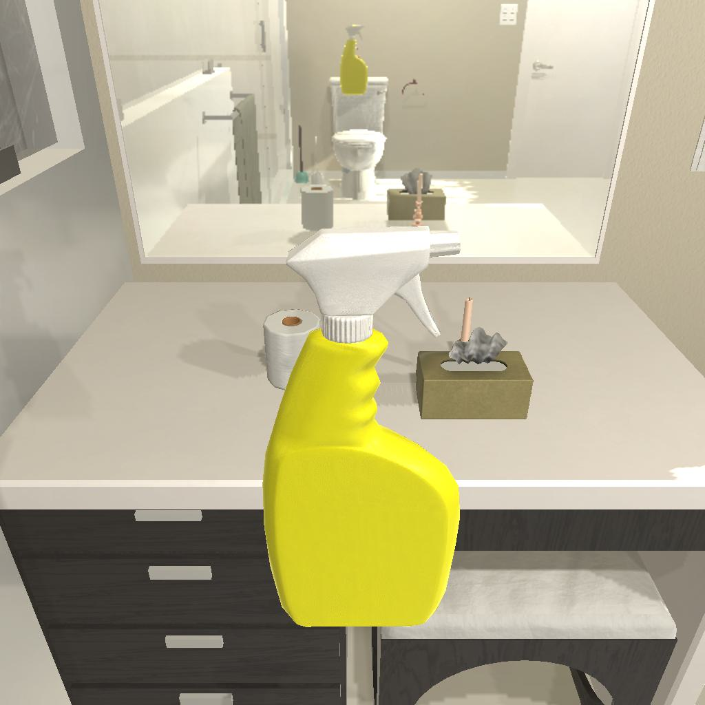
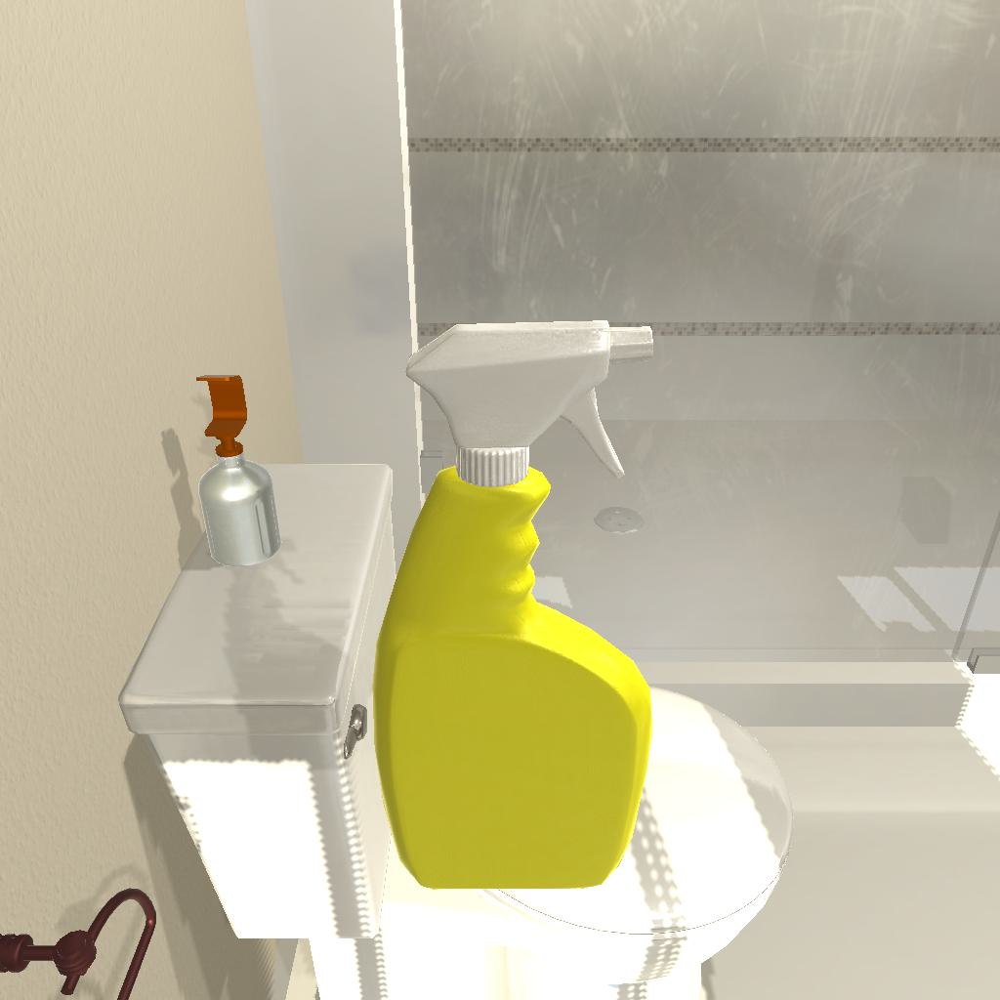

---------------------------------------------------------task: 28---------------------------------------------------------
--------------------------------------------------------------------------------------------------------------------------------------------------------------------
--------------------------------------------------------------------------------------------------------------------------------------------------------------------
Step:--------------------------------------------------------------------------5-------------------------------------------------------------------------------
----------------------------------------
VLM Prompt:
Image1:
Image2:
Image3:
**Instruction**
1. Analyze the provided images to identify all visible household objects and compare the difference between images (e.h. whether the object is opened or not and taken on hand or not), focusing on those relevant to the task description "put two spraybottle in toilet."
2. Use the analysis of images and the task hint "The agent must find an object of the desired type, pick it up, find the correct location to place it, put it down there, then look for another object of the desired type, pick it up, return to previous location, and put it down there with the other object." to answer the question: what is the most reasonable action in the choices for the task description "put two spraybottle in toilet"?
3. Decide and write the answer using the template: The answer is: (i): , where i is the real number. If there is no desired object in images, search every place based on **Initial Observation** to find the object. And if no one is exactly correct, choose a similar answer.
**Initial Observation**
You are in the middle of a room. Looking quickly around you, you can see bathtub (1), bathtubbasin (1), cart (1), sink (1), garbagecan (1), sinkbasin (1), countertop (1), drawer (1-4), toilet (1), toiletpaperhanger (1)
**Answer Choices**
(1): go to bathtub 1
(2): go to bathtubbasin 1
(3): go to cart 1
(4): go to sink 1
(5): go to garbagecan 1
(6): go to sinkbasin 1
(7): go to countertop 1
(8): go to drawer 1
(9): go to drawer 2
(10): go to drawer 3
(11): go to drawer 4
(12): go to toiletpaperhanger 1
(13): put spraybottle 1 in/on toilet 1
(14): examine spraybottle 1
(15): examine toilet 1
**Answer**
Let's think step by step by following the instructions.
----------------------------------------
----------------------------------------
Original Response:
Firstly, let's identify the visible objects in the provided images. In Image1 and Image2, we can see a yellow spray bottle prominently displayed in the foreground. This spray bottle is being held in the first person's perspective, suggesting that it has already been picked up. No other spray bottles are visible in these images.
From the initial observation, we know there is a countertop, drawers, and a toilet in the room. Since the task is to put two spray bottles in the toilet, and we already have one spray bottle in hand, we need to find another spray bottle.
None of the answer choices directly suggest finding another spray bottle. However, it is reasonable to assume that the second spray bottle might be in a drawer or on the countertop, as these are common places to store such items.
Analyzing the answer choices, the most relevant actions would be to check the countertop or the drawers for another spray bottle.
The answer is: (7): go to countertop 1
This action makes sense as the countertop is a likely place to find another spray bottle, and once we have both, we can then proceed to complete the task by putting them in the toilet. If the second spray bottle is not on the countertop, the next reasonable action would be to check the drawers.
----------------------------------------
----------------------------------------
>>> Refine Original VLM Response and Get Pure Action: go to countertop 1
This action makes sense as the countertop is a likely place to find another spray bottle, and once we have both, we can then proceed to complete the task by putting them in the toilet
----------------------------------------
-----------------------------------------------------------------
Running time: 15.943580627441406 seconds
Total Money: 17.637349999999984
-----------------------------------------------------------------
-----------------------------------------------------------------
Text Observation:Nothing happens.
-----------------------------------------------------------------
UNSUCCEED